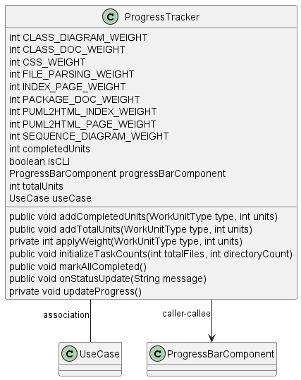

Class Diagram

Annotations
Relationships
| Type | Target | Details |
|---|---|---|
| CALLER_CALLEE | com.pjsoft.j2arch.core.util.ProgressTracker | |
| CALLER_CALLEE | com.pjsoft.j2arch.core.util.ProgressTracker | |
| CALLER_CALLEE | com.pjsoft.j2arch.core.util.ProgressTracker | |
| CALLER_CALLEE | com.pjsoft.j2arch.core.util.ProgressTracker | |
| CALLER_CALLEE | com.pjsoft.j2arch.core.util.ProgressTracker | |
| ASSOCIATION | com.pjsoft.j2arch.core.util.ProgressTracker.UseCase | Field: JAVA_DOC_GENERATION |
| ASSOCIATION | com.pjsoft.j2arch.core.util.ProgressTracker.UseCase | Field: UML_DIAGRAM_GENERATION |
| ASSOCIATION | com.pjsoft.j2arch.core.util.ProgressTracker.UseCase | Field: HTML_DOC_GENERATION |
| CALLER_CALLEE | com.pjsoft.j2arch.gui.ProgressBarComponent | |
| CALLER_CALLEE | com.pjsoft.j2arch.gui.ProgressBarComponent | |
| CALLER_CALLEE | com.pjsoft.j2arch.gui.ProgressBarComponent |
Fields
| Visibility | Type | Name | Annotations | Description |
|---|---|---|---|---|
| private | int | CLASS_DIAGRAM_WEIGHT | Description placeholder | |
| private | int | CLASS_DOC_WEIGHT | Description placeholder | |
| private | int | CSS_WEIGHT | Description placeholder | |
| private | int | FILE_PARSING_WEIGHT | Description placeholder | |
| private | int | INDEX_PAGE_WEIGHT | Description placeholder | |
| private | int | PACKAGE_DOC_WEIGHT | Description placeholder | |
| private | int | PUML2HTML_INDEX_WEIGHT | Description placeholder | |
| private | int | PUML2HTML_PAGE_WEIGHT | Description placeholder | |
| private | int | SEQUENCE_DIAGRAM_WEIGHT | Description placeholder | |
| private | int | completedUnits | Description placeholder | |
| private | boolean | isCLI | Description placeholder | |
| private | ProgressBarComponent | progressBarComponent | Description placeholder | |
| private | int | totalUnits | Description placeholder | |
| private | UseCase | useCase | Description placeholder |
Constructors
| Visibility | Name | Parameters | Annotations | Description |
|---|---|---|---|---|
| public | ProgressTracker | ProgressBarComponent progressBarComponent, UseCase useCase | Description placeholder | |
| public | ProgressTracker | UseCase useCase | Description placeholder |
Methods
| Visibility | Return Type | Name | Annotations | Description |
|---|---|---|---|---|
| public | void | addCompletedUnits(WorkUnitType type, int units) | Description placeholder | |
| public | void | addTotalUnits(WorkUnitType type, int units) | Description placeholder | |
| private | int | applyWeight(WorkUnitType type, int units) | Description placeholder | |
| public | void | initializeTaskCounts(int totalFiles, int directoryCount) | Description placeholder | |
| public | void | markAllCompleted() | Description placeholder | |
| public | void | onStatusUpdate(String message) | Description placeholder | |
| private | void | updateProgress() | Description placeholder |